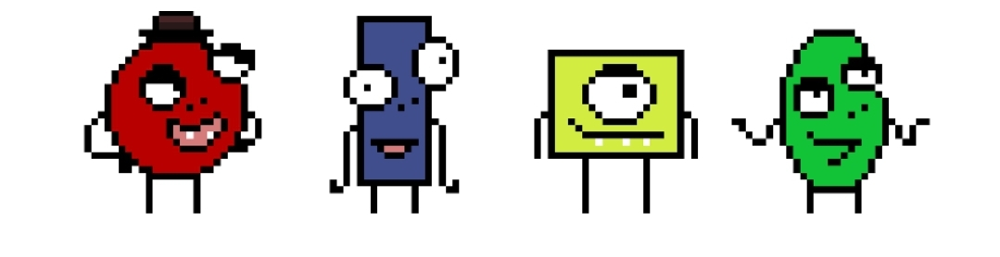
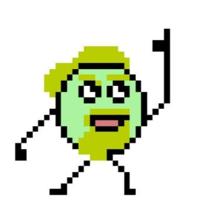
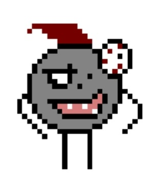
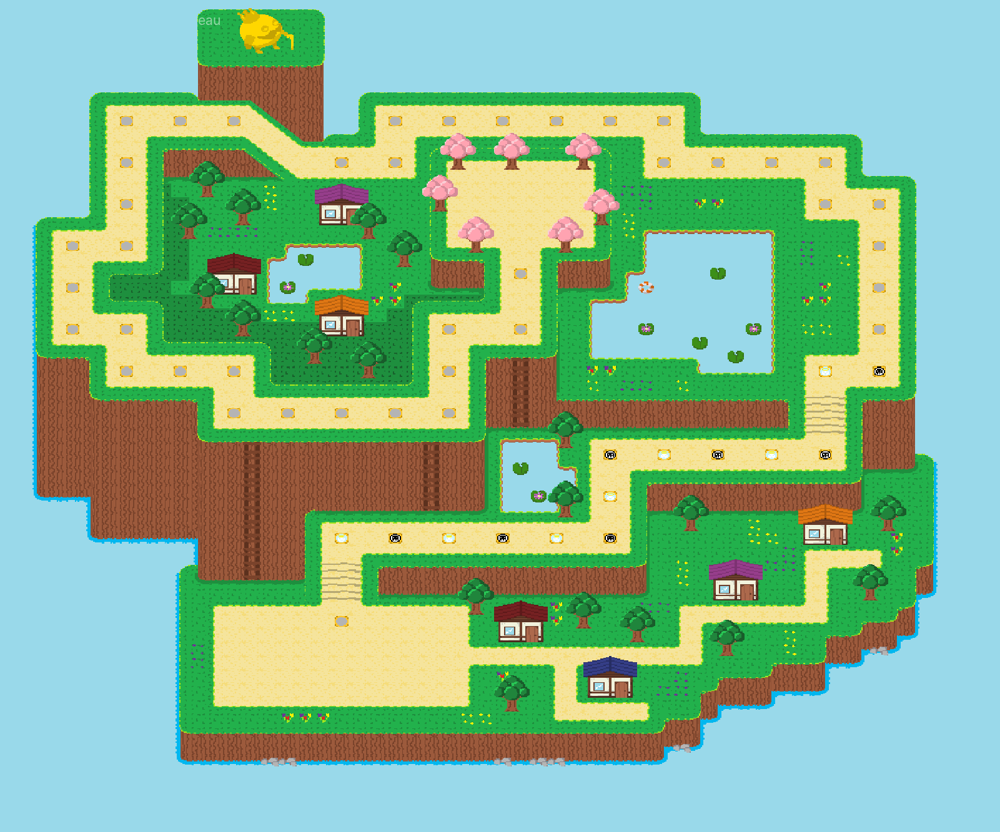
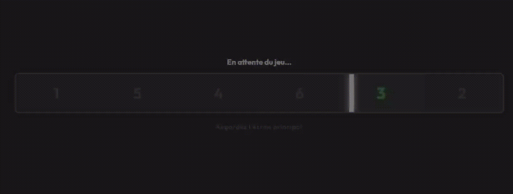

L'Histoire
Dookey pensait avoir tout vu. Après avoir obtenu son diplôme, il voulait juste enseigner les maths en paix. Mais une lettre mystérieuse l'a conduit sur cette île...
Ici, d'anciennes expériences du laboratoire s'affrontent dans de nouvelles épreuves complètement absurdes. Le but ultime de ces scientifiques fous ? Voir qui atteindra le sommet en premier pour remporter le Certificat Pro Max +... et surtout, UN HOT-DOG GRATUIT.
Les Dookeys
4 équipes, 4 personnages prêts à abandonner toute dignité pour gagner. La mauvaise foi est de mise.

Les Invités Surprises
Dookey Majestueux : Le premier de sa lignée. Il veut vous aider avec panache (mais refuse le hot-dog).

Dookey Boss : La pire expérience. Agent du chaos, il veut dominer l'île et manger ce hot-dog pour asseoir sa suprématie.

Comment Jouer ?
1. L'Écran principal (Le Plateau)
Le jeu se déroule sur un plateau de 53 cases affiché sur grand écran. La première équipe à la fin gagne !

2. Écran du téléphone (La Manette)
Chaque équipe contrôle son Dookey. Sur ton écran, une barre rapide défile sur les chiffres de 1 à 6.
Clique au bon moment ! Le déplacement final du personnage sera tiré au sort parmi les choix de toute l'équipe.

Les Cases Spéciales
Le parcours est semé d'embûches. Attention où vous mettez les pieds !

- BONUS (case bleue) : L'équipe avance de 3 à 5 cases supplémentaires.
- MALUS (case rouge): L'équipe recule de 3 à 5 cases.
- REJOUER (case verte) : ÉLIMINATION : L'équipe peut jouer une deuxième fois
- ET PLUS ENCORE: On vous réserve quelques surprises.